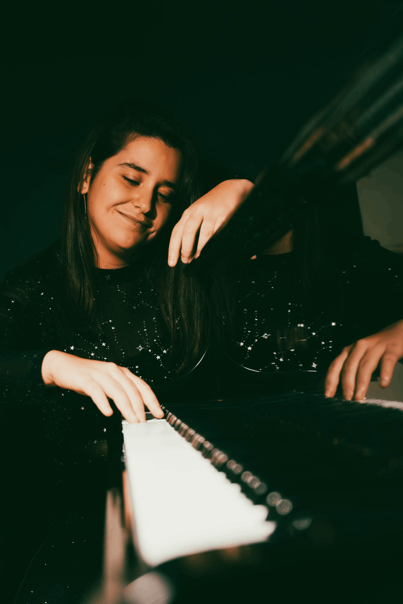

HTML GeneratorNée dans une ville située à proximité de Barcelone, Laia est une pianiste classique qui allie une carrière d'interprète à une grande passion pour la composition et l'improvisation. Sa activité musicale fusionne de manière naturelle la tradition et la créativité.
Laia a obtenu son diplôme au Conservatoire Supérieur de Musique du Liceu de Barcelone, où elle a étudié le piano avec Àlex Alguacil et la musique de chambre avec Emili Brugalla. Tout au long de son parcours en tant que pianiste soliste, elle a eu le privilège de suivre des cours magistraux auprès de musiciens de renom, parmi lesquels figurent Ya-Fei Chuang, Ian Jones, Danny Driver, Péter Nagy, Vasco Dantas, Congyu Wang, Stephanie Baer, Akiko Ebi, Ilya Maximov et Yejin Gil, et d'autres. Parallèlement à ses études musicales, Laia a également poursuivi des études en Biologie à l'Université de Barcelone, couronnées par une maîtrise en génétique et génomique.
Sa carrière en solo a été enrichie par son engagement envers la musique de chambre. Avec le Trio Aqua, cofondé le 2018, a eu l'opportunité de jouer en salles de concert internationales et participer à des masterclasses avec d'éminents musiciens tels qu'Adrian Brendel, Péter Nagy, Salvador Brotons, Luc-Marie Aguera et Jan Bjøranger. Ses collaborations avec le violoniste Jardiel Rodellas lors de concerts de musique fusionnée soulignent sa polyvalence. Avant ces événements, elle s'est distinguée en remportant le troisième prix au IXe Concours de Musique de Chambre Higini Anglès (2013).
Au fil des ans, Laia a eu le privilège de se produire dans de prestigieuses salles de concert, que ce soit en tant que soliste ou en musique de chambre: Teatro das Figuras (Faro), Auditori del Tívoli (el Vendrell), Jardí dels Tarongers (Barcelona), Sala Parés (Barcelona), Reial Cercle Artístic de Barcelona, Nathan Milstein Hall (Estocolm), Kleines Studio (Salzburg) et le Real Collegio (Lucca), pour n'en nommer que quelques-uns. En 2024, elle a fait ses débuts avec orchestre avec l'Orquestra do Algarve, interprétant le Concerto pour piano et orchestre en mi mineur de Chopin sous la direction de Joshua dos Santos.
Depuis son plus jeune âge, Laia a manifesté un vif intérêt pour la composition musicale, et certaines de ses compositions ont été présentées en première mondiale. En 2023, son oeuvre intitulée "Like Water" a été récompensée par le 2e prix au concours Leonardo4Music, suivie d'une première mondiale au BOZAR de Bruxelles. La même année, son arrangement de Les Dolces Festes a été créé à Lisbonne, et en 2025, l'arrangement pour big band et chœur de ONE (du musical A Chorus Line) au CSM du Liceu. Actuellement, elle compose, sur commande, la musique d’un nouveau ballet. Guidée par le compositeur Mike Ladouceur, Laia continue d’explorer les limites de l’expression musicale.
De plus, l'improvisation musicale occupe une place centrale dans l'art de Laia, qu'elle a développée en apprenant auprès de Carles Marigó, Emilio Molina et Juan Maria Cisneros. Elle a également exploré cette discipline dans le contexte de la danse, avec des pianistes professionnels tels que Kim Helweg, Mariana Palacios, Alberto de Paz et Juanjo Ochoa. Actuellement, elle collabore avec des danseurs professionnels dans le cadre du Programme de Haute Performance (PAR) de Terrassa et à l'IEA Oriol Martorell, accompagnant des danseurs classiques, contemporains et espagnols et jouant pour des maîtres de renommée internationale tels que Rodolfo Castellanos, Anael Martín, Ilya Jivoy, William Castro, Magalí Suárez et Jia Yong Sun, entre autres.
En 2025, Laia sortira son premier album solo, Beyond the Score: Mozart & Chopin. Ce projet ne se contente pas de célébrer les œuvres intemporelles de ces compositeurs et leur relation, mais les réinvente également à travers l’improvisation, une pratique courante chez ces compositeurs, offrant ainsi une nouvelle perspective de la musique classique.
Laia partage sa passion pour la musique, la composition et l'improvisation sur sa chaîne YouTube, invitant le public à découvrir son processus créatif et à se connecter avec sa vision musicale.

HTML Generator